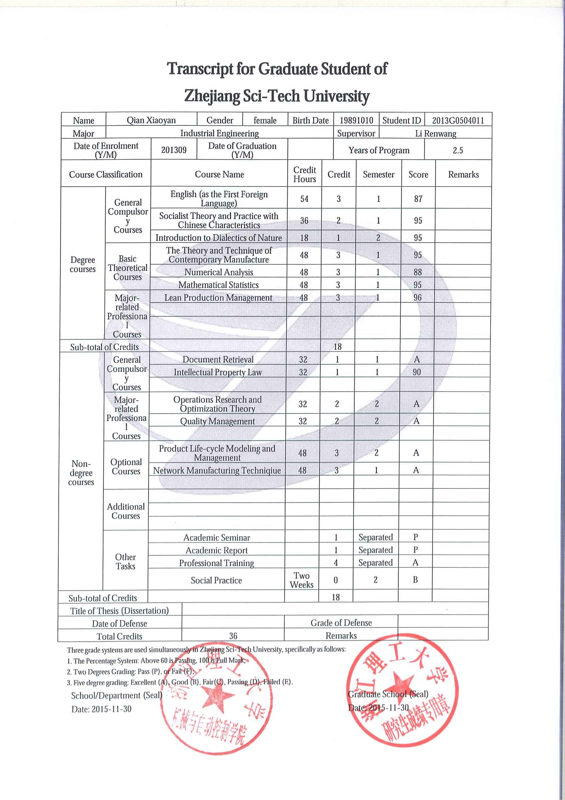

I am a Research Assistant in the School of Electrical & Electronic Engineering at Nanyang University of Technology (NTU). I have received my M.Eng.
in Industrial Engineering from Zhejiang Science and Technology University in June, 2016, and my B.Eng.
in industrial engineering from Zhejiang University of Technology in July, 2009.
My research interests are in the System Analysis and Decision Analysis,
in building framework to quantify and analyze the impacts (economic, climate and etc ) of optimization choices.
My CV can be viewed here.
System Engineering and Operations Research. In particular, in the following topics:
School of Electrical & Electronic Engineering, NTU, Supervisor: Prof. Wu Kan
School of Electrical & Electronic Engineering, NTU, Supervisor: Prof. Wu Kan
National Natural Science Foundation of China program (No. 51475434)
This team divided students into several groups and my group was distributed to research and analyze the case of Cuban Missile Crisis using Conflict Analysis theory.
Natural Science Foundation of Zhejiang Province program (From June. 2015 to June. 2016, Supervisor:Song Jinyu)
Overall GPA:Graduate: 92.90/100 Ranking: 1/125, Udergraduate: 87.30/100 Ranking: 1/135 
Name:Xiaoyan QIAN
Nationality: Chinese
Occupation: Research Assistant
Contacts:（+65）9335 9288
Present Address:
BLK 340, Clementi Ave 5, Singapore
E-MAIL:
xiaoyanqian1010@gmail.com